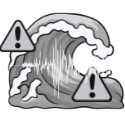

當氣溫或預測未來24小時內將達高溫水平時發出，提醒市民提防中暑並適時補充水分。
當氣溫顯著下降或達寒冷水平時發出，提醒公眾適時添衣及注意保暖。
當預測未來數小時內有較高降雨機率時發出，提醒外出時攜帶雨具防範。
進行高空工作或戶外活動人士要注意大風所帶來的威脅。
熱帶氣旋進入澳門特區周邊警戒範圍，可能對當地構成注意影響。
熱帶氣旋正走近澳門，本澳可能受其環流影響，需開始採取戒備措施。
預期澳門普遍吹強風，陣風顯著，市民應固定易受風吹物件。
受熱帶氣旋影響，澳門風力顯著加強至烈風程度，市民應留在室內安全地方。
本澳正受暴風吹襲，風力極強，對戶外構成嚴重威脅。
威力極強之熱帶氣旋中心或其眼壁掠過附近，本澳將吹颶風，破壞力極大。
預期受天文大潮及風暴潮共同影響，低窪地區可能出現輕微水浸。
預期水浸情況將較為顯著，內港及低窪地區市民應做好防洪及移走財物準備。
預期將出現嚴重水浸，低窪地區水深可能迅速上升，威脅生命安全，需立即疏散。
澳門廣泛地區錄得或預料錄得每小時雨量達到一定標準之強降雨。
暴雨持續，雨勢急劇加劇，道路及低窪地區可能出現嚴重積水。
極其嚴重的暴雨，廣泛地區出現嚴重水浸及交通癱瘓，市民應留在安全室內。
天氣炎熱，日間最高氣溫達指定酷熱門檻，提醒注意防曬及補充水分。
持續高溫，氣溫顯著偏高，戶外活動容易引發中暑或熱衰竭。
極端酷熱天氣，氣溫達到極高水平，強烈建議避免長時間戶外曝曬。
受冷空氣影響，氣溫下降至清涼或寒冷水平，市民需注意保暖。
寒潮襲澳，氣溫顯著偏低，對長者及慢性病患者健康構成威脅。
極端嚴寒天氣，氣溫降至極低水平，需加倍防範低溫症及照顧弱勢社群。
鄰近海域發生強烈地震或海底活動，可能引發海嘯並對沿岸構成潛在威脅。

確認海嘯波將抵達本澳或珠江口沿岸，沿海及低窪地區居民應迅速向高處轉移。